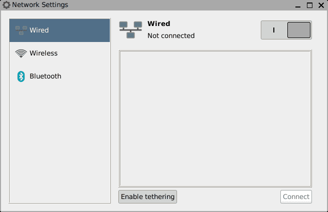
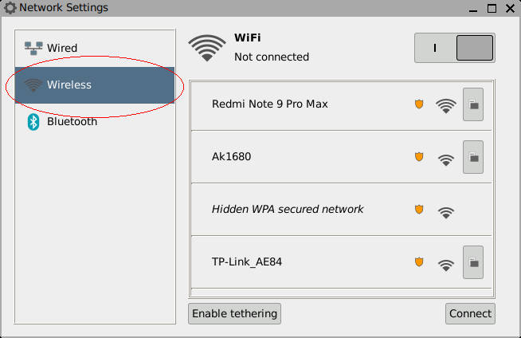
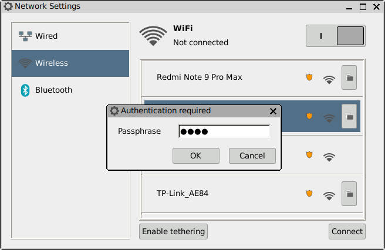
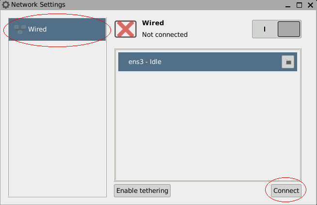

HOWTO: Internet access using ConnMan-GTK
What is ConnMan-GTK?
ConnMan-GTK is a GUI (Graphical User Interface) application which is used in all latest puppies to connect to the internet and bluetooth.
How to open up ConnMan-GTK?
Open up Application Menu > Puppy Setup > Internet. Otherwise, run this command in a terminal:-
connman-gtk
The opened window should look somehting like this:-
How to connect to Wireless Network?
Follow these steps to connect to a wirless network using SNS:-
- Open up ConnMan-GTK (Read how to open up ConnMan-GTK).
- Go to Wireless tab in the ConnMan-GTK window (if not already opened in that tab).
-
The window should now look like this:-
 - The button present at the top-right of the window can be used to enable/disable WiFi.
- Now click on any one of the listed wireless networks and then click on the Connect button.
-
You will now be prompted to enter password for the wireless network you want to connect to. Enter the password and click OK button.
 - Wait for few seconds to get connected to the internet. Now enjoy surfing on the internet!
How to connect to Wired (Ethernet) Network?
Follow these steps to connect to a wirless network using SNS:-
- Open up ConnMan-GTK (Read how to open up ConnMan-GTK).
- Go to Wired tab in the ConnMan-GTK window (if not already opened in that tab).
-
If you have just a single Ethernet connected, then you may be automatically connected to that network. If not, then click on any of the listed wired networks to select them; and then click Connect button:-
 - Wait for few seconds to get connected to the internet. Now enjoy surfing on the internet!